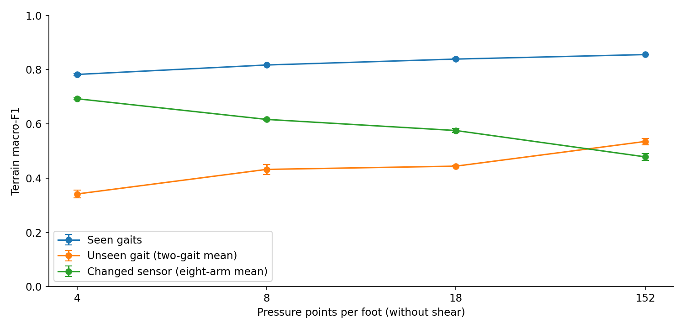
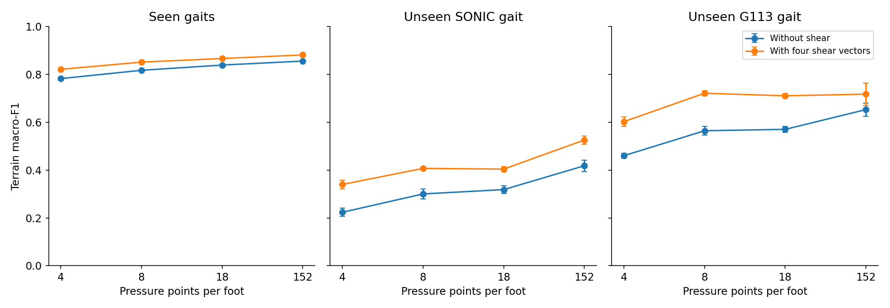
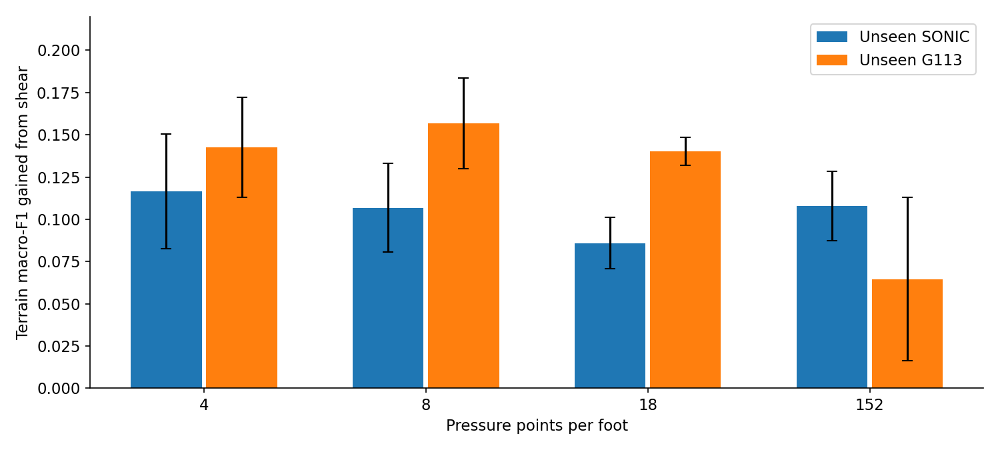
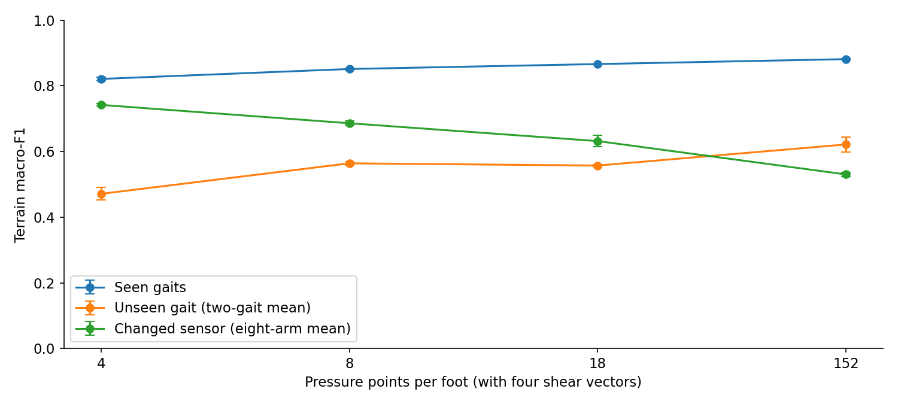

How many pressure points, and is shear worth it?
A quick check after the second simulation run of step 1. The simulated pressure map of the Booster K1's sole was pooled into 4, 8 or 18 pads per foot or kept at full resolution (152 points), each with and without four shear vectors per foot. Each layout was scored on gaits it saw, on gaits it did not see, and under eight changes of the sensor model. Two real legged-robot datasets were used as a distant check.
In short
- No single number of pressure points is best. More points help on seen gaits (0.782 at four pads to 0.856 at full resolution) and on an unseen gait, but under a changed sensor model the ranking reverses: 0.727 at four pads against 0.084 at full resolution with a foot-shaped mask.
- Four shear vectors help every tested layout. At four pads: 0.782 → 0.821 on seen gaits, and +0.116 and +0.142 on the two unseen gaits. The smallest useful shear count is unknown: one- and two-vector layouts were not tested.
- Shear does not help more on the human-like gait than on the flat-foot one; that hypothesis is not supported.
- No layout earns a robust recommendation. Four pads are too coarse; finer layouts are fragile to a change of sensor.
- On real quadruped data, three-axis force beats normal force alone at an unseen speed on one dataset (89.0 % against 83.4 %) but not on the second. Neither validates a humanoid pressure layout.
What was done
- Data and sole. The dataset of the second simulation run: the Booster K1 in MuJoCo with three gaits (G113 and G80, ordinary flat-foot walking policies, and SONIC, human-like heel-to-toe walking) on six terrains, with a 19 × 8 pressure map per foot and per-episode random sensor parameters.
- Layouts. The map pooled into 4, 8 or 18 pads per foot, or kept at full resolution (152 points). Each with no shear or with four block shear vectors per foot (front and back, each split left and right).
- Models. Sole only, no joints or IMU. Three seeds each.
- Three scores per layout. Seen gaits: the test split of the training data. Unseen gait: trained without SONIC or without G113 and tested on it; the mean of those two is the two-gait mean (a held-out G80 run is not available). Changed sensor: the mean over eight test sets read with a different sensor model, without retraining: shifted parameters, a pad sole, a foot-shaped mask, no saturation, and four more realistic sensor variants.
- Scores. Terrain macro-F1 on walking test windows, mean ± population sd over seeds 0 to 2. Real-data scores are accuracy over five seeds.
All layouts at a glance
| Layout per foot | Sensing elements | Seen gaits | Unseen SONIC | Unseen G113 | Two-gait mean | Changed sensor, 8-set mean | Label |
|---|---|---|---|---|---|---|---|
| 4 pads | 4 | 0.782 ± 0.003 | 0.223 ± 0.017 | 0.460 ± 0.010 | 0.342 ± 0.014 | 0.693 ± 0.003 | insufficient |
| 4 pads + shear | 8 | 0.821 ± 0.006 | 0.340 ± 0.019 | 0.602 ± 0.020 | 0.471 ± 0.019 | 0.742 ± 0.003 | insufficient |
| 8 pads | 8 | 0.817 ± 0.001 | 0.300 ± 0.020 | 0.564 ± 0.018 | 0.432 ± 0.018 | 0.617 ± 0.004 | fragile |
| 8 pads + shear | 12 | 0.851 ± 0.003 | 0.407 ± 0.006 | 0.721 ± 0.010 | 0.564 ± 0.006 | 0.686 ± 0.006 | fragile |
| 18 pads | 18 | 0.839 ± 0.003 | 0.318 ± 0.016 | 0.570 ± 0.012 | 0.444 ± 0.003 | 0.576 ± 0.008 | fragile |
| 18 pads + shear | 22 | 0.866 ± 0.001 | 0.404 ± 0.011 | 0.711 ± 0.010 | 0.557 ± 0.003 | 0.632 ± 0.018 | fragile |
| Full map, 152 points | 152 | 0.856 ± 0.001 | 0.418 ± 0.024 | 0.653 ± 0.028 | 0.535 ± 0.012 | 0.478 ± 0.013 | fragile |
| Full map + shear | 156 | 0.881 ± 0.002 | 0.526 ± 0.017 | 0.717 ± 0.047 | 0.622 ± 0.023 | 0.530 ± 0.007 | fragile |
Reading the table. Read across a row: every layout loses most on an unseen gait, and finer layouts lose most under a changed sensor. Read down a column: seen-gait and unseen-gait scores rise with resolution, while the changed-sensor score falls. Adding shear raises every row in the seen and unseen columns. The label is the verdict of a rule set in advance, applied here at reduced scope: four-pad layouts are "insufficient", all finer ones "fragile".
How many pressure points
Without shear, seen-gait F1 rises from 0.782 ± 0.003 at four pads to 0.856 ± 0.001 at full resolution, and unseen SONIC from 0.223 ± 0.017 to 0.418 ± 0.024. A changed sensor reverses that ranking. With a foot-shaped mask, four pads still score 0.727 ± 0.007, the full map 0.084 ± 0.018. So no number of pressure points can be recommended from this simulation: the answer depends on a sensor model that has not been measured.

An earlier draft quoted 0.80 for four pads without shear; that was the score on the nominal sensor (0.799 ± 0.002), not the seen-gait score on the training data (0.782 ± 0.003) used here.
Is shear worth it
Gain in terrain F1 from adding four shear vectors, paired by seed, for each pressure layout.
| Pressure layout | Seen gaits | Unseen SONIC | Unseen G113 | Changed sensor, mean |
|---|---|---|---|---|
| 4 pads | +0.039 ± 0.005 | +0.116 ± 0.034 | +0.142 ± 0.030 | +0.049 ± 0.005 |
| 8 pads | +0.034 ± 0.004 | +0.107 ± 0.026 | +0.157 ± 0.027 | +0.069 ± 0.009 |
| 18 pads | +0.027 ± 0.003 | +0.086 ± 0.015 | +0.140 ± 0.008 | +0.056 ± 0.026 |
| Full map | +0.026 ± 0.001 | +0.108 ± 0.021 | +0.065 ± 0.048 | +0.052 ± 0.007 |
Reading the table. Shear helps every tested layout: a little on seen gaits, much more on an unseen gait. At four pads, seen-gait F1 goes from 0.782 ± 0.003 to 0.821 ± 0.006, and the gain holds on unseen SONIC, on unseen G113 and on the changed-sensor mean. Whether shear helps on each changed-sensor test set individually was not established. The minimum useful number of shear vectors is unknown, because the one- and two-vector layouts were cut.

Shear and the unseen gait
The first run raised a hypothesis: shear may buy robustness to a change of gait rather than accuracy on a known gait. Two questions follow.
- Does shear help more on the human-like gait than on a flat-foot gait? Not supported. With the full map the gain is 0.108 ± 0.021 on unseen SONIC against 0.065 ± 0.048 on unseen G113, but the second gain fails the rule for a real difference; at four pads the order is the other way (0.116 against 0.142). No gait-specific changed-sensor comparison or held-out G80 run exists, and the complete original gait comparison remains untested.
- Does shear help on an unseen gait at all? Yes for the tested pooled layouts on both unseen gaits (four pads: SONIC 0.116 ± 0.034, G113 0.142 ± 0.030) and for the full map on unseen SONIC; the full map on unseen G113 is inconclusive.

Which layout
No layout earns a robust recommendation under the original rule. The two candidates at either end:
- Four pads + shear: seen 0.821 ± 0.006, two-gait mean 0.471 ± 0.019, changed sensor 0.742 ± 0.003. Robust to the sensor model, weak on an unseen gait.
- Full map + shear: seen 0.881 ± 0.002, two-gait mean 0.622 ± 0.023, changed sensor 0.530 ± 0.007. Best on gaits, fragile to the sensor model.

Reading the chart. The unseen-gait and changed-sensor lines cross: one objective asks for more points, the other for fewer. Which one matters more depends on how close the real sole is to the simulated one, which only a real recording can show. The course metrics and the full recommendation grid were not completed.
Real robot data
No humanoid pressure-sole dataset was available, so the shear question was tested by analogue on QCAT: a public terrain dataset from a real quadruped with one three-axis force vector per foot. "Normal" uses only the vertical force, "three-axis" the full vector (the analogue of shear against no shear). Testing at an unseen speed stands in for an unseen gait. The same temporal network as in simulation, five seeds, accuracy in percent.
| Input | 10-fold by step | 10-fold by trial | Leave one speed out | Leave one step frequency out |
|---|---|---|---|---|
| Normal force | 92.1 ± 0.3 | 88.6 ± 0.3 | 83.4 ± 0.6 | 71.6 ± 1.3 |
| Three-axis force | 94.3 ± 0.4 | 92.7 ± 0.4 | 89.0 ± 0.4 | 79.8 ± 1.6 |
| IMU | 97.7 ± 0.2 | 92.5 ± 1.1 | 78.1 ± 0.9 | 73.9 ± 0.8 |
| Three-axis force + IMU | 98.2 ± 0.2 | 96.3 ± 0.4 | 88.8 ± 0.5 | 83.8 ± 1.4 |
Reading the table. The shear analogue holds on QCAT: at an unseen speed the three-axis force reaches 89.0 ± 0.4 % against 83.4 ± 0.6 % for normal force alone. The sole-only analogue also points the same way as in simulation: at an unseen speed the motion sensor alone drops to 78.1 %, while force alone (89.0 %) does as well as force with IMU (88.8 %). The 10-fold step-level column is the one comparable with published results (force 96.6 %, IMU 96.63 %, force + IMU 97.64 %, Ahmadi et al. 2021).
- A second real dataset (an ANYmal quadruped with a foot force/torque sensor) showed no gain from the three-axis force over normal force. That dataset states no licence, so its numbers are kept for internal analysis and not shown here.
- Neither dataset validates a humanoid pressure layout. Both are quadrupeds with one force sensor per foot; a changed hardware sensor and an unseen robot gait were not tested. The matching simulation rows (the sole pooled to one value per foot) are mostly pending: only sole-only, no-shear, seen gaits is done (65.4 ± 0.6 %, three seeds).
Limits and what was cut
- A reduced quick check. The full planned experiment did not finish: the one- and two-shear-vector layouts, the held-out G80 fold, the course metrics, the full layout grid and the replication with the second run's block layout were all cut.
- The sensor variants are imperfect. In the sensor checks the largest centre-of-pressure difference was 1.57 mm, which failed the 1 mm limit; small pad footprints overcount the load at the edges, and foot-shaped masks leave out the edge loads of the box-shaped simulated foot.
- All simulation limits of the second run apply, above all the corner loading of the rigid foot while walking and a pressure map rebuilt from the foot's total force.
- Contact-aware walking failed. Two attempts to train a walking policy with better foot contact both failed the improvement rule; they are not used here.
Scores are terrain macro-F1 on simulated walking test windows over six terrains, mean ± population sd over three seeds, with sole-only models; real-data scores are accuracy in percent over five seeds. Related: step 1, first simulation run, step 1, second simulation run, the simulated sole up close, step 1 summary.